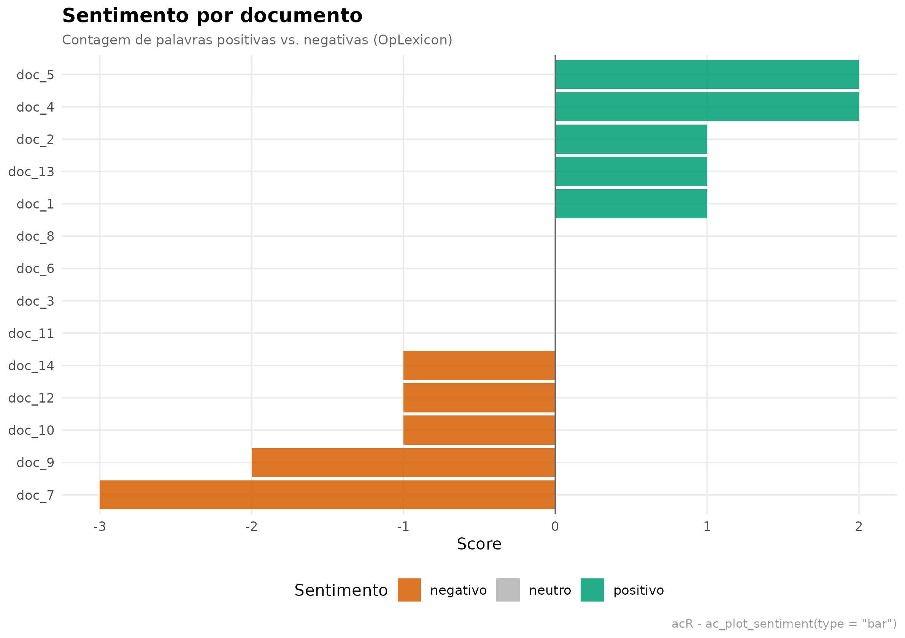
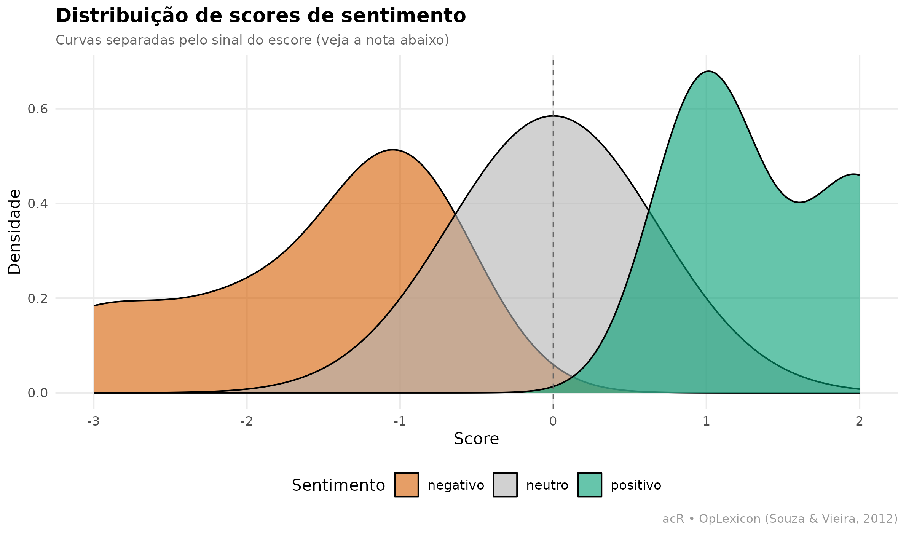
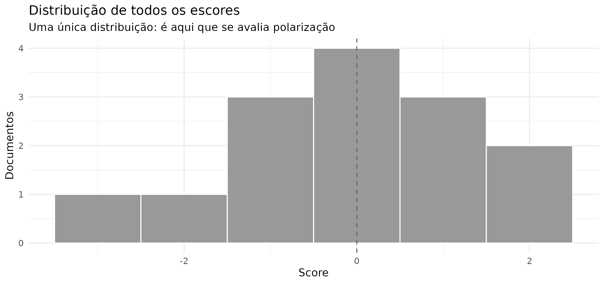
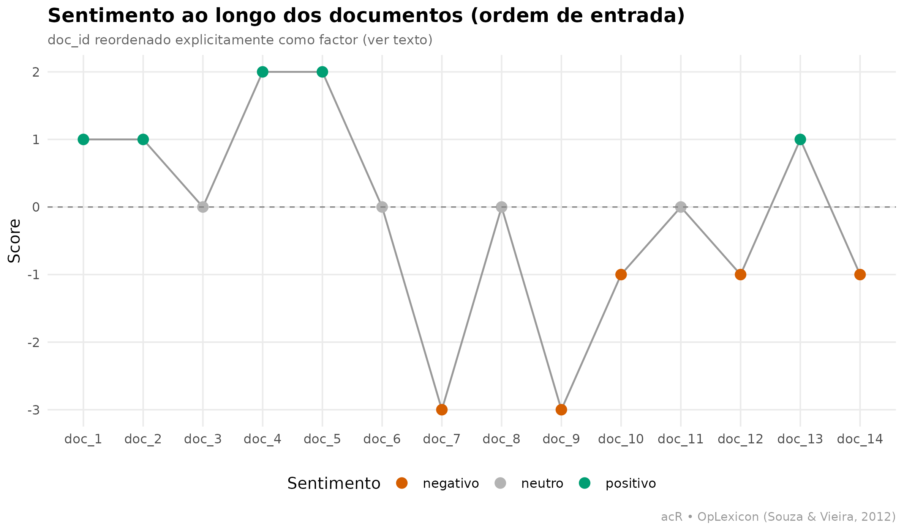
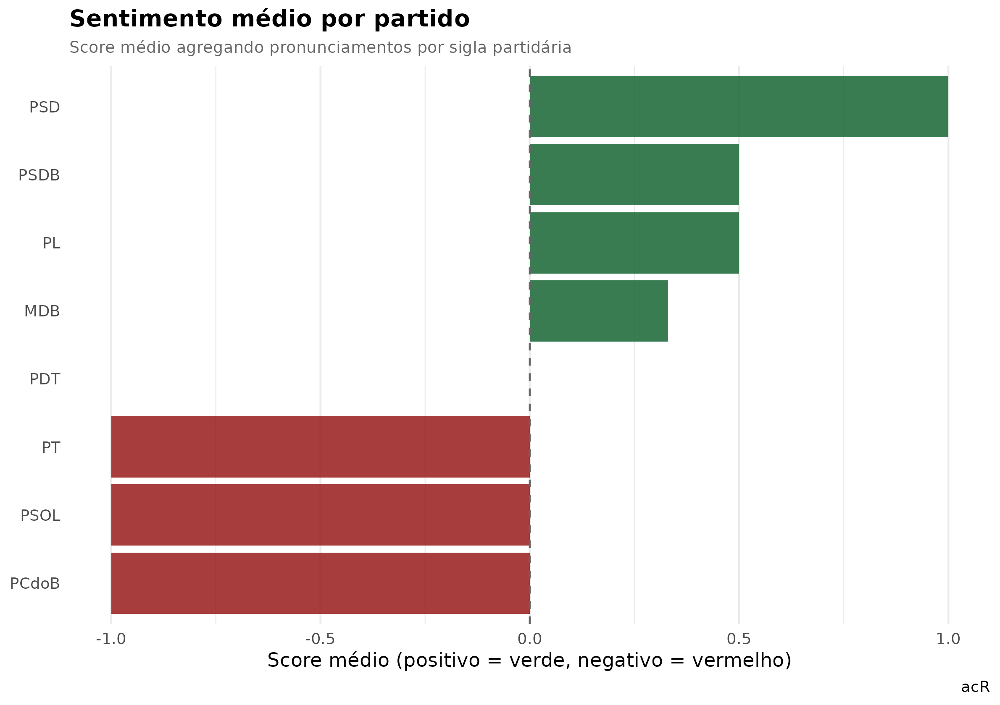
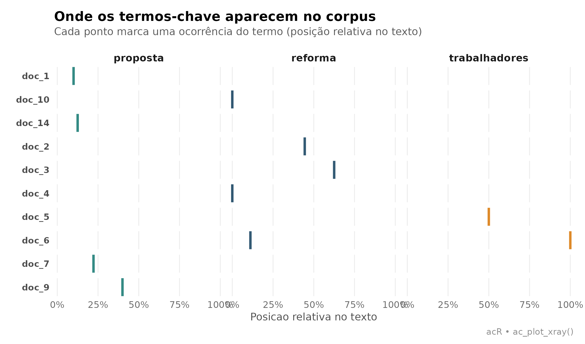

O que é análise de sentimento com léxico
Análise de sentimento baseada em léxico classifica textos em positivo, negativo ou neutro contando palavras de listas curadas: palavras que carregam valência positiva (excelente, aprovar, conquista) contra palavras de valência negativa (péssimo, fracasso, retrocesso).
O acR usa por padrão o OpLexicon (Souza
& Vieira, 2012), o mais usado para português brasileiro, com cerca
de 30 mil palavras rotuladas.
Quando usar léxico vs. LLM?
| Cenário | Léxico | LLM |
|---|---|---|
| Sinal grosso em milhares de docs | ✅ | ❌ caro |
| Ironia, sarcasmo, contexto | ❌ | ✅ |
| Sem chave de API, sem rede | ✅ | ❌ |
| Precisa reprodutibilidade exata | ✅ | ⚠️ estocástico |
| Documentos muito curtos (tweets) | ⚠️ | ✅ |
Regra prática: use léxico para panorama rápido e
filtragem de casos extremos, depois use codificação
qualitativa (via ac_qual_code()) na amostra que
interessa.
1. Corpus: pronunciamentos sobre uma reforma polêmica
Corpus fabricado de 14 pronunciamentos, com metadados de partido e
posição declarada. Serve para exercitar visualizações; em corpora reais,
substitua pela coleta via ac_fetch_camara() ou
ac_fetch_senado().
textos <- c(
# Favoráveis
"Excelente proposta que moderniza o sistema e protege as geracoes futuras.",
"Aprovamos com convicção esta reforma responsável e necessária ao país.",
"Vitória histórica para a economia: reforma corrige distorções antigas.",
"Reforma equilibrada garante sustentabilidade fiscal e futuro promissor.",
"Conquista importante que beneficia trabalhadores e empresas do Brasil.",
# Contrários
"Esta reforma é um retrocesso vergonhoso que prejudica os trabalhadores.",
"Voto contra: proposta desastrosa ataca os mais pobres e vulneráveis.",
"Uma tragédia nacional: estão roubando direitos duramente conquistados.",
"Rejeitamos com indignação essa proposta injusta e cruel com o povo.",
"Reforma péssima que aprofunda desigualdades e destrói a proteção social.",
# Neutros / técnicos
"O texto substitutivo altera o artigo 201 da Constituição Federal.",
"O relatório final incorporou emendas apresentadas em plenário.",
"A comissão aprovou o parecer com dez votos a favor e oito contra.",
"A proposta segue para votação na próxima sessão ordinária."
)
df <- data.frame(
text = textos,
posicao = c(rep("favor", 5), rep("contra", 5), rep("neutro", 4)),
partido = c("PT","PSD","PL","MDB","PSDB",
"PSOL","PT","PDT","PSOL","PCdoB",
"MDB","PSDB","PL","MDB"),
stringsAsFactors = FALSE
)
corpus <- ac_corpus(df)
corpus
#>
#> ── Corpus acR ──────────────────────────────────────────────────────────────────
#> • Documentos: 14
#> • Metadados: 2 colunas
#> • Idioma: "pt"
#>
#> # A tibble: 14 × 4
#> doc_id text posicao partido
#> <chr> <chr> <chr> <chr>
#> 1 doc_1 Excelente proposta que moderniza o sistema e protege a… favor PT
#> 2 doc_2 Aprovamos com convicção esta reforma responsável e nec… favor PSD
#> 3 doc_3 Vitória histórica para a economia: reforma corrige dis… favor PL
#> 4 doc_4 Reforma equilibrada garante sustentabilidade fiscal e … favor MDB
#> 5 doc_5 Conquista importante que beneficia trabalhadores e emp… favor PSDB
#> 6 doc_6 Esta reforma é um retrocesso vergonhoso que prejudica … contra PSOL
#> # ℹ 8 more rows2. Sentimento por documento
ac_sentiment() retorna um tibble com contagens de
palavras positivas (n_pos), negativas (n_neg)
e neutras (n_neu), o score (n_pos − n_neg pelo
método padrão sum) e o rótulo categórico
sentiment.
sent <- ac_sentiment(corpus)
sent
#> # A tibble: 14 × 6
#> doc_id n_pos n_neg n_neu score sentiment
#> <chr> <int> <int> <int> <int> <chr>
#> 1 doc_1 1 0 10 1 positivo
#> 2 doc_10 0 1 9 -1 negativo
#> 3 doc_11 0 0 10 0 neutro
#> 4 doc_12 0 1 7 -1 negativo
#> 5 doc_13 1 0 12 1 positivo
#> 6 doc_14 0 1 8 -1 negativo
#> 7 doc_2 1 0 9 1 positivo
#> 8 doc_3 0 0 9 0 neutro
#> 9 doc_4 2 0 6 2 positivo
#> 10 doc_5 2 0 7 2 positivo
#> 11 doc_6 1 1 8 0 neutro
#> 12 doc_7 0 3 7 -3 negativo
#> 13 doc_8 0 0 8 0 neutro
#> 14 doc_9 0 2 9 -2 negativoCruzando com a posição declarada: o léxico “acerta”?
sent |>
dplyr::left_join(df |> dplyr::mutate(doc_id = paste0("doc_", dplyr::row_number())),
by = "doc_id") |>
dplyr::count(posicao, sentiment) |>
tidyr::pivot_wider(names_from = sentiment, values_from = n, values_fill = 0L)
#> # A tibble: 3 × 4
#> posicao negativo neutro positivo
#> <chr> <int> <int> <int>
#> 1 contra 3 2 0
#> 2 favor 0 1 4
#> 3 neutro 2 1 1Como ler esta tabela
Onde olhar. Cada linha é uma posição declarada pelos autores (
favor,contra,neutro); cada coluna é o rótulo que o léxico deu. Leia por linha: o número em cada célula é quantos discursos daquela posição receberam aquele rótulo. O acerto está nas células “favor × positivo” e “contra × negativo”.O que este exemplo mostra. Dos 5 discursos
favor, 4 saempositivo; dos 5contra, 3 saemnegativo; nenhum discurso é invertido (não há “contra” lido como positivo, nem “favor” como negativo). Os erros caem todos emneutroou nos textos técnicos. Os três casos que mais ensinam:doc_3(“Vitória histórica para a economia”) edoc_8(“Uma tragédia nacional: estão roubando direitos”) saem neutros porque nenhuma das palavras deles está no OpLexicon; edoc_14(“segue para votação na próxima sessão ordinária”) sai negativo porque o léxico lê “ordinária” como adjetivo pejorativo.Em palavras simples. O léxico acerta a direção quando o texto usa adjetivos de opinião (“excelente”, “desastrosa”), e erra de dois jeitos: quando a opinião está em substantivos e verbos que ele não conhece (cobertura) e quando uma palavra tem outro sentido no jargão legislativo (domínio).
Cuidado. Esses dois erros são os clássicos do método de dicionário (Grimmer & Stewart, 2013). O OpLexicon é formado sobretudo por adjetivos (Souza et al., 2011), e palavras mudam de polaridade conforme o domínio: Loughran & McDonald (2011) mostraram o mesmo com “liability” em relatórios financeiros. Antes de usar o léxico num corpus legislativo, liste os termos dele mais frequentes no seu corpus, corrija os que têm outro sentido e valide numa amostra humana (
ac_dictionary_validate()).
3. Comparar métodos de agregação
Três métodos alteram como o score é calculado a partir
das contagens:
-
sum(padrão):score = n_pos − n_neg. Depende do tamanho do texto. -
mean: normaliza pelo número total de palavras. Comparável entre textos curtos e longos. -
ratio:(n_pos − n_neg) / (n_pos + n_neg). Ignora palavras neutras, foca só na intensidade emotiva relativa.
sent_sum <- ac_sentiment(corpus, method = "sum")
sent_mean <- ac_sentiment(corpus, method = "mean")
sent_ratio <- ac_sentiment(corpus, method = "ratio")
comparacao <- data.frame(
doc_id = sent_sum$doc_id,
sum = round(sent_sum$score, 2),
mean = round(sent_mean$score, 2),
ratio = round(sent_ratio$score, 2)
)
head(comparacao, 10)
#> doc_id sum mean ratio
#> 1 doc_1 1 0.09 1
#> 2 doc_10 -1 -0.10 -1
#> 3 doc_11 0 0.00 0
#> 4 doc_12 -1 -0.12 -1
#> 5 doc_13 1 0.08 1
#> 6 doc_14 -1 -0.11 -1
#> 7 doc_2 1 0.10 1
#> 8 doc_3 0 0.00 0
#> 9 doc_4 2 0.25 1
#> 10 doc_5 2 0.22 14. Visualização: barras por documento
ac_plot_sentiment(sent, type = "bar") +
ggplot2::labs(
title = "Sentimento por documento",
subtitle = "Contagem de palavras positivas vs. negativas (OpLexicon)",
caption = "acR - ac_plot_sentiment(type = \"bar\")"
)
Como ler este gráfico
Onde olhar. Cada barra é um discurso, e o comprimento é o
score(palavras positivas menos negativas). Barra para a direita (verde) = saldo positivo; para a esquerda (laranja) = negativo; sem barra = saldo zero. As barras estão ordenadas pelo escore, não pela ordem dos documentos.O que este exemplo mostra. No topo,
doc_4edoc_5(+2, ambos favoráveis); na base,doc_7(−3, contrário: “proposta desastrosa ataca os mais pobres e vulneráveis”, três palavras negativas). Quatro discursos ficam sem barra (escore 0): só um é técnico (doc_11); os outros sãodoc_3(favorável),doc_6edoc_8(contrários). E dois textos técnicos (doc_12,doc_14) aparecem em laranja.Em palavras simples. O gráfico ordena os discursos do mais positivo ao mais negativo segundo o léxico, mas a ordem só é tão boa quanto o léxico: as barras “vazias” e as laranjas dos textos técnicos são os erros de cobertura e de domínio da seção 2.
Cuidado. A cor depende só do sinal: +1 recebe o mesmo verde que +2, embora +1 seja um caso quase neutro (uma única palavra positiva). E o escore
sumcresce com o tamanho do texto; em textos de tamanhos muito diferentes, compare commethod = "mean"ou"ratio"(seção 3).
5. Visualização: distribuição (densidade)
Útil para ver a forma da distribuição: sentimento é bimodal (dois picos, favor e contra) ou tem uma cauda longa?
ac_plot_sentiment(sent, type = "density") +
ggplot2::labs(
title = "Distribuição de scores de sentimento",
subtitle = "Curvas separadas pelo sinal do escore (veja a nota abaixo)"
)
Como ler este gráfico
Onde olhar. Uma curva colorida para cada rótulo (
positivo,negativo,neutro). A linha tracejada vertical marca o zero.O que este exemplo mostra. A curva verde fica toda à direita do zero, a laranja toda à esquerda, e a cinza é um pico fino em cima do zero.
Em palavras simples. Essa separação não é um achado: as cores foram definidas pelo próprio sinal do escore, então a curva “positivo” só pode ficar à direita do zero, e a “neutro” só pode ficar no zero. Aconteceria com qualquer conjunto de textos. Este gráfico não mostra polarização; ele só mostra como cada grupo de rótulo se espalha.
Cuidado. Polarização, no sentido de DiMaggio, Evans & Bryson (1996), é uma propriedade da distribuição inteira (o quanto os escores se espalham e se formam dois montes). Avalie olhando todos os escores juntos, como no histograma abaixo, ou colorindo por uma variável que não seja o próprio escore (a posição declarada, por exemplo). E com 14 documentos a estimativa de densidade é instável (Silverman, 1986).
ggplot2::ggplot(sent, ggplot2::aes(x = score)) +
ggplot2::geom_histogram(binwidth = 1, fill = "grey60", color = "white") +
ggplot2::geom_vline(xintercept = 0, linetype = "dashed", color = "grey40") +
ggplot2::labs(
title = "Distribuição de todos os escores",
subtitle = "Uma única distribuição: é aqui que se avalia polarização",
x = "Score", y = "Documentos"
) +
ggplot2::theme_minimal()
Como ler este gráfico
Onde olhar. Cada barra é um valor de escore (−3, −2, …, +2), e a altura é quantos discursos tiveram aquele escore. A linha tracejada marca o zero. Procure dois montes separados (sinal de polarização) ou um monte só (sinal de consenso ou de pouca opinião).
O que este exemplo mostra. A barra mais alta é a do zero (4 discursos); −1 e +1 vêm logo depois (3 cada); as pontas são curtas (um discurso em −3, um em −2, dois em +2). É um monte só, centrado perto do zero.
Em palavras simples. Pelos escores do léxico, o corpus parece pouco polarizado, embora os autores tenham declarado posições bem opostas (favor e contra).
Cuidado. O histograma descreve os escores, não as posições reais. Parte dos discursos opinativos caiu no zero por falta de cobertura do léxico (seção 2), o que puxa a distribuição para o centro. Quando o histograma contradiz o que você sabe do corpus, a explicação costuma estar no instrumento, não nos textos.
6. Visualização: série ordenada
Se seus documentos têm ordem temporal (discursos ao longo do ano), a
série mostra tendência. Atenção:
ac_plot_sentiment(type = "line") desenha o eixo X na ordem
dos levels de doc_id; se doc_id for
só texto (character), o R usa ordem alfabética de string
por padrão, não a ordem de criação nem cronológica. Com rótulos como
doc_1…doc_14, isso significa que
doc_10 apareceria logo depois de doc_1 e antes
de doc_2. Para evitar isso, transforme doc_id
num factor com os levels na ordem desejada antes
de plotar:
sent_ordenado <- sent
sent_ordenado$doc_id <- factor(sent_ordenado$doc_id, levels = paste0("doc_", 1:14))
ac_plot_sentiment(sent_ordenado, type = "line") +
ggplot2::labs(
title = "Sentimento ao longo dos documentos (ordem de entrada)",
subtitle = "doc_id reordenado explicitamente como factor (ver texto)"
)
Como ler este gráfico
Onde olhar. O eixo horizontal é a ordem dos documentos (
doc_1adoc_14); cada ponto é o escore de um documento, colorido pelo rótulo; a linha tracejada é o zero.O que este exemplo mostra. Os 5 primeiros pontos ficam acima do zero ou nele, os 5 seguintes (
doc_6adoc_10) descem até −3, e os 4 últimos ficam perto do zero.Em palavras simples. A “série” sobe, cai e se estabiliza, mas isso não é tendência no tempo: os documentos foram criados em três blocos, primeiro os favoráveis, depois os contrários, depois os técnicos. O desenho só reproduz a ordem em que o exemplo foi montado.
Cuidado. Uma linha só mostra evolução se o eixo for de fato tempo. Numa análise real, ordene pela data de publicação (ou use
ac_temporal(), que agrega por período) e desconfie de oscilações ponto a ponto em amostras pequenas: costumam ser ruído.
7. Agregação por grupo (partido)
A análise mais útil raramente é doc-a-doc: é comparar grupos. Vamos agregar por partido:
por_partido <- sent |>
dplyr::left_join(df |> dplyr::mutate(doc_id = paste0("doc_", dplyr::row_number())),
by = "doc_id") |>
dplyr::group_by(partido) |>
dplyr::summarise(
n_docs = dplyr::n(),
score_med = round(mean(score), 2),
score_dp = round(stats::sd(score, na.rm = TRUE), 2),
n_positivo = sum(sentiment == "positivo"),
n_negativo = sum(sentiment == "negativo"),
n_neutro = sum(sentiment == "neutro"),
.groups = "drop"
) |>
dplyr::arrange(dplyr::desc(score_med))
por_partido
#> # A tibble: 8 × 7
#> partido n_docs score_med score_dp n_positivo n_negativo n_neutro
#> <chr> <int> <dbl> <dbl> <int> <int> <int>
#> 1 PSD 1 1 NA 1 0 0
#> 2 PL 2 0.5 0.71 1 0 1
#> 3 PSDB 2 0.5 2.12 1 1 0
#> 4 MDB 3 0.33 1.53 1 1 1
#> 5 PDT 1 0 NA 0 0 1
#> 6 PCdoB 1 -1 NA 0 1 0
#> 7 PSOL 2 -1 1.41 0 1 1
#> 8 PT 2 -1 2.83 1 1 0Visualização (ranqueando partidos pelo score médio):
if (requireNamespace("ggplot2", quietly = TRUE)) {
ggplot2::ggplot(
por_partido,
ggplot2::aes(x = stats::reorder(partido, score_med), y = score_med,
fill = score_med > 0)
) +
ggplot2::geom_col(alpha = 0.85, show.legend = FALSE) +
ggplot2::geom_hline(yintercept = 0, linetype = 2, color = "grey40") +
ggplot2::coord_flip() +
ggplot2::scale_fill_manual(values = c("TRUE" = "#166534", "FALSE" = "#991B1B")) +
ggplot2::labs(
title = "Sentimento médio por partido",
subtitle = "Score médio agregando pronunciamentos por sigla partidária",
x = NULL,
y = "Score médio (positivo = verde, negativo = vermelho)",
caption = "acR"
) +
ggplot2::theme_minimal(base_size = 12) +
ggplot2::theme(
plot.title = ggplot2::element_text(face = "bold"),
plot.subtitle = ggplot2::element_text(color = "grey40", size = 10),
panel.grid.major.y = ggplot2::element_blank()
)
}
Como ler esta tabela
Onde olhar. Uma linha por partido. Leia
score_med(média dos escores) sempre junto comn_docs(quantos discursos entraram na média) escore_dp(desvio-padrão: o quanto os discursos do partido discordam entre si).O que este exemplo mostra. PSD tem a maior média (1,00), mas com 1 discurso só. O PT aparece com média −1,00, perto do PSOL e do PCdoB, mas o desvio-padrão dele é o maior da tabela (2,83): seus 2 discursos são um favorável (+1) e um contrário (−3), e a média de posições opostas parece uma posição negativa que nenhum dos dois discursos tem.
Em palavras simples. A média resume bem um partido quando os discursos dele são parecidos; quando são opostos, ela inventa um meio-termo. O desvio-padrão alto é o aviso.
Cuidado. Com 1 a 3 discursos por partido, nenhuma dessas médias sustenta uma afirmação sobre “a posição do partido”. Reporte
n_docsescore_dpao lado da média, e quando o desvio-padrão for alto, olhe os discursos individuais antes de concluir.
8. Termos-chave dentro do texto (X-ray)
ac_plot_xray() mostra onde termos-alvo
aparecem dentro de cada documento. Útil para ver se palavras negativas
se concentram no começo, meio ou fim, sinal de estrutura retórica.
ac_plot_xray(corpus, terms = c("reforma", "trabalhadores", "proposta")) +
ggplot2::labs(
title = "Onde os termos-chave aparecem no corpus",
subtitle = "Cada ponto marca uma ocorrência do termo (posição relativa no texto)"
)
Como ler este gráfico
Onde olhar. Cada linha é um documento; cada marca é uma ocorrência de um dos termos buscados, colorida pelo termo. O eixo horizontal é a posição relativa dentro do texto: 0 = primeira palavra, 1 = última.
O que este exemplo mostra. reforma aparece no começo de vários discursos (posição 0 em
doc_4edoc_10, 0,11 emdoc_6); proposta também tende ao início (de 0,10 a 0,40); trabalhadores aparece no meio dedoc_5(0,50) e na última palavra dedoc_6(1,00).Em palavras simples. Nos discursos contrários e favoráveis, o objeto do debate (“a reforma”, “a proposta”) é nomeado logo no início da frase, e as consequências (“prejudica os trabalhadores”) vêm no fim.
Cuidado. O X-ray foi pensado para documentos longos, onde início, meio e fim correspondem a partes do discurso (introdução, argumento, conclusão). Aqui cada documento é uma frase só, então a posição reflete a ordem das palavras na frase, não a estrutura retórica. Use o gráfico para ver onde um termo aparece; a interpretação de por que aparece ali pede leitura dos trechos (
ac_kwic()).
9. Exportar para artigo/relatório
# Tabela por partido pronta para colar no LaTeX
ac_export(por_partido, arquivo = "sentimento_por_partido.tex", formato = "latex")
# CSV para Excel/planilha
ac_export(sent, arquivo = "sentimento.csv", formato = "csv")
# Se quiser passar para a etapa qualitativa (LLM):
# amostrar documentos ambíguos (perto de score = 0) para revisão humana
casos_limitrofes <- sent |> dplyr::filter(abs(score) <= 1)Referências
- Souza, M.; Vieira, R. (2012). Sentiment Analysis on Twitter with Portuguese Language. 4th Workshop on Computational Approaches to Subjectivity, Sentiment and Social Média Analysis, PUCRS.
- DiMaggio, P.; Evans, J.; Bryson, B. (1996). Have Americans’ Social Attitudes Become More Polarized? American Journal of Sociology, 102(3), 690-755.
- Grimmer, J.; Stewart, B. M. (2013). Text as Data: The Promise and Pitfalls of Automatic Content Analysis Methods for Political Texts. Political Analysis, 21(3), 267-297.
- Loughran, T.; McDonald, B. (2011). When Is a Liability Not a Liability? Textual Analysis, Dictionaries, and 10-Ks. The Journal of Finance, 66(1), 35-65.
- Souza, M.; Vieira, R.; Busetti, D.; Chishman, R.; Alves, I. M. (2011). Construction of a Portuguese Opinion Lexicon from multiple resources. 8th Brazilian Symposium in Information and Human Language Technology (STIL).
- Pang, B.; Lee, L. (2008). Opinion Mining and Sentiment Analysis. Foundations and Trends in Information Retrieval, 2(1-2), 1-135.
- Silge, J.; Robinson, D. (2017). Text Mining with R. O’Reilly.
- Silverman, B. W. (1986). Density Estimation for Statistics and Data Analysis. Chapman and Hall.
- Sampaio, R. C.; Lycarião, D. (2021). Análise de conteúdo categorial: manual de aplicação. ENAP.